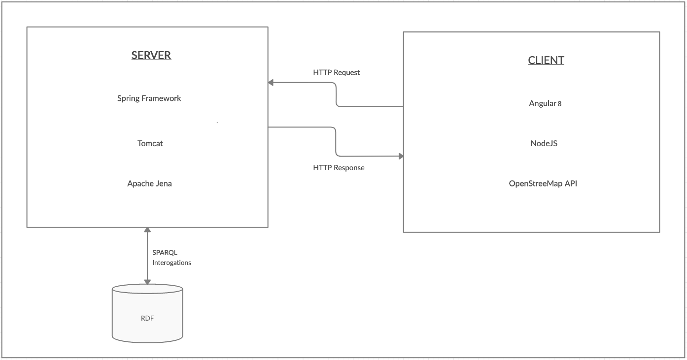

In this report we have highlighted the stages of the current project development, its description, the technologies used and the challenges encountered. Finally, we presented some conclusions and future improvements for our application.
Notis is a web application that offers the possibility to search for different entities as notaries and translators based on different searching criterias such as: proximity, type of documents that can be released, etc.
The application offer real-time locations on map (provided by Google Maps) on which we can indentify the user location or actual positions of the offices and estimates the time needed to travel to the desired destination using different types of transport (personal vehicle, bicycle, public transport, walking).
For each type of entity we display informations regarding the documents that can be released, their prices and general contact informations such as: telephone number and email address. Also, we can check which are the additional documents we need to provide and we can download templates for them in order to complete them and to not waste any precious time.
Application architecture is separated in two main components consisting of: the server application and the client application. In the image below we can visualize the main architecture.
Communication between server and client is made via HTTP requests.
The server application is written in Java. In Java we do all the processing that the application requires. Regarding technologies we are using: Spring Boot, Maven and Apache Jena.
For a better structure of a code, as design pattern we use MVCS pattern where we split the code in four main parts:
Maven is used in order to resolve all imports of dependecies required for the project.
Spring Boot is used to accelerate and facilitate back-end application development. With the help of Spring we create a microservice which helps in processing of data necessary for client, through endpoints. There is an OpenAPI document that contains the main endpoints offered by our server can be found here.
We made use of Apache Jena framework to manipulate the RDF model and to interogate it via SPARQL. The RDF structure will be described in the next chapter.
The client web application is developed using Angular framework and runs on a NodeJS server.
In order to use a proper map on which the users can see the actual position of different offices across the country we made use of Google Maps API. The official documentation of this API can be consulted here.
Angular is a platform for building mobile and desktop web applications, based ob TypeScript language.
NodeJS is a JavaScript runtime environment that executes JavaScript code outside of a browser. NodeJS lets developers use JavaScript to write command line tools and for server-side scripting—running scripts server-side to produce dynamic web page content before the page is sent to the user's web browser.